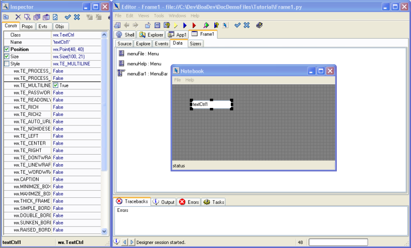
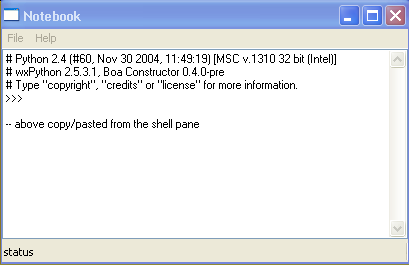

|

|

|

|
Getting Started Guide for Boa Constructor
|

|

|
|
Next:Adding
the File Menu Functionality Up:Getting
Started Guide for Boa Constructor Previous:Add
a Menu Bar
2.5 Adding the Text Control
The next task is to add the main text editing control to our
frame. This control is called wx.TextCtrl.
- Open the Designer again to edit
the frame, Frame1.py.
- On the palette, select the 'Basic
Controls' pane. Select the wx.TextControl.
- Hint: You can hold the mouse
pointer over each control to find out its name.
- Move your mouse pointer to the
Designer window, ensure that a Baloon help shows 'Frame1', then
click the left mouse button. A new text control will be drawn. We do
not have to size the control. By default it will fill all the
available area, i.e. between the status bar and the menu bar.
- The default wx.TextControl is a
single line entry. We must indicate to the control, that we want
this to be a multi-line data entry control. To do this we edit the
'style' property in the Inspector. This is on the Constructor pane.
- Edit the style and set the style
to wx.TE_MULTILINE. You can type this into the value field for style
or you can click on the check box to the left of style and Boa will
show you all the available styles. Set the styles you want to
use to 'True' by clicking on them.
- The style field contains valid
python code. To set two logical styles you would separate them with
a '|'. You can see all the available styles for the wx.TextControl
in the wxPython online help for the class wx.TextControl.
- Hint: Use Ctrl-H and enter 'textctrl' to get to the
documentation and find descriptions for the different styles, note
that some of them might not be shown for wx.TextCtrl as they are
inherited from e.g. wx.Window. Currently Ctrl-H does NOT work
in the Designer window, but just about anywhere else within Boa.

- Rename the text field. The default
name is 'textCtrl1'. Set the name to 'textEditor'.
- In the Constructor pane there is a
field called 'Value'. This field contains the default value of the
control. Blank out this field.
- Update the source code with your
new control using either Post button
- Save your source code changes.
- Run your application.

- The textEditor field is
automatically sized to the available space.
- If you
resize the frame, the control resizes.
- Notice that wxWidgets provides you
with a scrollbar. The field will automatically, scroll if you go
beyond the bottom. If you type line longer than the width of the
edit window, they will wrap.
- You also have cut and paste functionality, and block marking
by default.
|
|
|
|
Getting Started Guide for Boa Constructor
|
|
|
|
Next:Adding
the File Menu Functionality Up:Getting
Started Guide for Boa Constructor Previous:Add
a Menu Bar